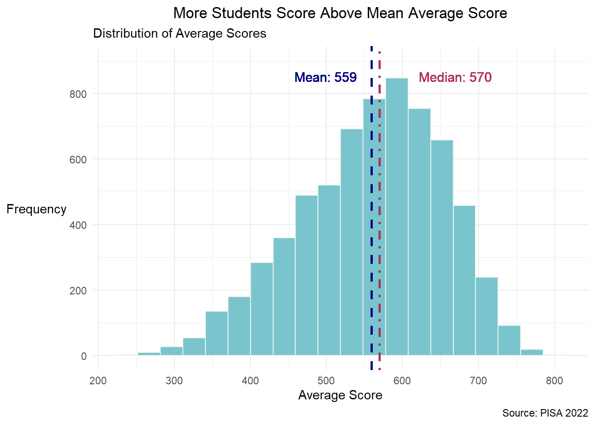
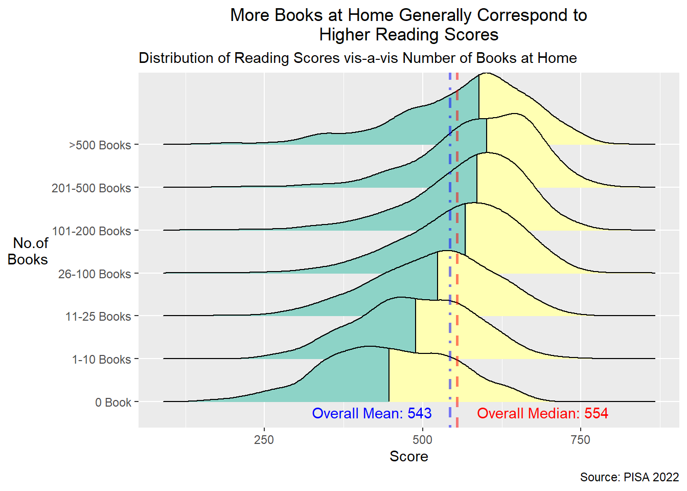

pacman::p_load(haven, tidyverse, reshape2,
ggthemes, ggridges, ggdist,
ggpubr)Take-home Exercise 2
DataVis Makeover: Investigating Singapore Students’ Performance for PISA 2022
1 Introduction
1.1 Background
Singapore has come a long way since gaining independence in 1965. Without natural resources, human capital development through a well-planned education system is a critical part of Singapore’s transformation from third world to first.
Despite the success, there is still a correlation between socio-economic status and education achievement, as well as ingrained perceptions that some schools are better than others.
Hence, there is a need to use data to analyse the performance of Singapore students across different subjects, and identify any relationships between the performance in various subjects and factors such as gender, socioeconomic status, and type of school.
1.2 Objective and Tasks
In this take-home exercise, the objective is to improve on an original visualisation by a fellow course-mate by focusing on what works, what does not work, why they do not work, and how to make it better.
The specific tasks are:
Select a Take-home Exercise 1 prepared by a course-mate;
Critic the submission in terms of clarity and aesthetics;
Prepare a sketch for the alternative design using the data visualisation design principles and best practices from Lesson 1 and Lesson 2; and
Remake the original design using ggplot2, ggplot2 extensions, and tidyverse packages.
2 Getting Started
2.1 Setting the Analytical Tools
The R packages used in this take-home exercise are:
haven for importing SAS files;
tidyverse (i.e. readr, tidyr, dplyr, ggplot2) for performing data science tasks such as importing, tidying, and wrangling data, as well as creating graphics based on The Grammar of Graphics;
reshape2 for transforming data between wide and long formats;
ggthemes for extra themes, geoms, and scales for ggplot2;
ggridges for creating ridgeline plots;
ggdist for visualising distributions and uncertainty; and
ggpubr for creating publication ready ggplot2 plots.
The code chunk below uses the p_load() function in the pacman package to check if the packages are installed in the computer. If yes, they are then loaded into the R environment. If no, they are installed, and then loaded into the R environment.
2.2 Data Sources
The OECD Programme for International Student Assessment (PISA) measures how well 15-year-old students in different countries are “prepared to meet the challenges of today’s knowledge societies” by looking at “their ability to use their knowledge and skills to meet real-life challenges”. The PISA surveys take place very three years, the latest being conducted in 2022.
The PISA 2022 database contains the full set of responses from individual students, school principals, and parents. There are a total of five data files and their contents are as follows:
Student questionnaire data file;
School questionnaire data file;
Teacher questionnaire data file;
Cognitive item data file; and
Questionnaire timing data file.
For the purpose of this take-home exercise, the “Student questionnaire data file” is used.
3 Data Wrangling
3.1 Importing Data
The dataset used in this take-home exercise is the 2022 PISA student questionnaire data file, cy08msp_stu_qqq.sas7bdat, which is in the SAS file format.
The file is imported into the R environment using the read_sas() function in the haven package and stored as the R object, stu_qqq.
stu_qqq = read_sas("data/cy08msp_stu_qqq.sas7bdat")The tibble data frame, stu_qqq, has 1,279 columns (variables) and 613,744 rows (observations).
3.2 Filtering for Singapore Observations
There are 6,606 rows with the country code (i.e., CNT) value of “SGP”, which represents Singapore. This count is cross-verified by the information provided in the “CY08MSP_STU_QQQ” sheet in the codebook. The codebook also stated that Singapore students’ made up 1.0763% of the entire global student population who took part in the 2022 PISA.
The filter() function in the dplyr package is used to obtain these rows, and stored as the R object, stu_qqq_SG.
stu_qqq_SG = stu_qqq %>% filter(CNT == "SGP")The tibble data frame, stu_qqq_SG, is then saved in the rds file format and imported into the R environment.
write_rds(stu_qqq_SG, "data/stu_qqq_SG.rds")stu_qqq_SG = read_rds("data/stu_qqq_SG.rds")3.3 Chosen Submission and Data Preparation
Using the chosen submission, the dataset is prepared according to the original submission.
# PREPARE MAIN DATA-FRAME
student_columns <- "CNTSTUID"
gender_columns <- "ST004D01T"
school_columns <- "CNTSCHID"
education_column_mother <- "ST005Q01JA"
education_column_father <- "ST007Q01JA"
training_column_mother <- "ST006Q01JA"
training_column_father <- "ST008Q01JA"
possession_room_column <- "ST250Q01JA"
possession_computer_column <- "ST250Q02JA"
possession_software_column <- "ST250Q03JA"
possession_phone_column <- "ST250Q04JA"
possession_internet_column <- "ST250Q05JA"
possession_book_column <- "ST255Q01JA"
math_columns <- c("PV1MATH", "PV2MATH", "PV3MATH", "PV4MATH", "PV5MATH", "PV6MATH", "PV7MATH", "PV8MATH", "PV9MATH", "PV10MATH")
reading_columns <- c("PV1READ", "PV2READ", "PV3READ", "PV4READ", "PV5READ", "PV6READ", "PV7READ", "PV8READ", "PV9READ", "PV10READ")
science_columns <- c("PV1SCIE", "PV2SCIE", "PV3SCIE", "PV4SCIE", "PV5SCIE", "PV6SCIE", "PV7SCIE", "PV8SCIE", "PV9SCIE", "PV10SCIE")
student_ID <- stu_qqq_SG[, student_columns, drop = FALSE]
gender <- stu_qqq_SG[, gender_columns, drop = FALSE]
school_ID <- stu_qqq_SG[, school_columns, drop = FALSE]
education_mother <- stu_qqq_SG[, education_column_mother, drop = FALSE]
education_father <- stu_qqq_SG[, education_column_father, drop = FALSE]
training_mother <- stu_qqq_SG[, training_column_mother, drop = FALSE]
training_father <- stu_qqq_SG[, training_column_father, drop = FALSE]
possession_room <- stu_qqq_SG[, possession_room_column, drop = FALSE]
possession_computer <- stu_qqq_SG[, possession_computer_column, drop = FALSE]
possession_software <- stu_qqq_SG[, possession_software_column, drop = FALSE]
possession_phone <- stu_qqq_SG[, possession_phone_column, drop = FALSE]
possession_internet <- stu_qqq_SG[, possession_internet_column, drop = FALSE]
possession_book <- stu_qqq_SG[, possession_book_column, drop = FALSE]
math_avg <- rowMeans(stu_qqq_SG[, math_columns, drop = FALSE])
reading_avg <- rowMeans(stu_qqq_SG[, reading_columns, drop = FALSE])
science_avg <- rowMeans(stu_qqq_SG[, science_columns, drop = FALSE])
stu_df <- data.frame(Student_ID = student_ID,
Gender = gender,
School_ID = school_ID,
Education_mother = education_mother,
Education_father = education_father,
# Training_mother = training_mother,
# Training_father = training_father,
Possession_room = possession_room,
Possession_computer = possession_computer,
Possession_software = possession_software,
Possession_phone = possession_phone,
Possession_internet = possession_internet,
Possession_book = possession_book,
Math_Average = round(math_avg,digits=2),
Reading_Average = round(reading_avg,digits=2),
Science_Average = round(science_avg,digits=2),
Average_score=round(((math_avg+reading_avg+science_avg)/3),digits=2))
names(stu_df) <- c("Student_ID","Gender","School_ID","Education_mother",
"Education_father","Possession_room","Possession_computer",
"Possession_software","Possession_phone",
"Possession_internet","Possession_book","Math_Average",
"Reading_Average","Science_Average","Average_Score")The finalised tibble data frames, stu_df, and Score_by_School are then saved in the rds file format and imported into the R environment.
write_rds(stu_df, "data/stu_df.rds")stu_df = read_rds("data/stu_df.rds")4 Data Visualisation Makeover
4.1 Distribution of Singapore Students’ Performance
4.1.1 Original Visualisation
The original visualisation at Section 3 (Distribution of Singapore Students’ Performance) of the submission is reproduced below. The plot on the average score (not specific subjects) is chosen.
The observation made:
“In this case, all the histogram are left skewed. The left-skewed (negative skewness) nature of the histogram indicates that there is a concentration of scores towards the higher end, with a tail extending towards lower scores. The mean is influenced by these lower scores, pulling it towards the left. The median, being less sensitive to extreme values, is positioned higher in the distribution.”
4.1.2 Critique
Clarity
Right Visualisation. The use of a histogram provides a clear representation of the distribution of the average scores among the students, and the use of the mean and median vertical dashed lines shows the left-skewness of the distribution.
Missing Key Message in Title. However, the key message stated in the observation is not included in the title (which is factual). Stating the key message in the title would help the reader zoom in on the intended message of the plot.
Aesthetics
Graphical Integrity Maintained. The y-axis starts from zero, ensuring that the histogram is not distorted.
Simple Colours/Font Used. The plot uses an easy-to-read font and colour. However, this can be enhanced by using a professional theme.
Overcrowding of Details. The x-axis labels use values that are too detailed (not rounded up). Also, each column of the histogram is labelled with the corresponding frequency for that range of scores. These details may be overwhelming and distract from the intended message. The placement of the mean and median values can also be better adjusted to avoid overlapping with the histogram. The decimal values in the mean and median may also be removed to improve readability given that the differences in the two values is more than 1 point.
Orientation of Label. The y-axis title can be rotated for easier reading.
4.1.3 Sketch of Alternative Design
4.1.4 Improved Visualisation
An improved plot is made by making the following changes:

average_sci = mean(stu_df$Average_Score, na.rm = TRUE)
median_sci = median(stu_df$Average_Score, na.rm = TRUE)
ggplot(stu_df, aes(x = Average_Score)) +
geom_histogram(bins = 20,
fill = "cadetblue3",
color = "grey95") +
labs(title = "More Students Score Above Mean Average Score",
subtitle = "Distribution of Average Scores",
x = "Average Score",
y = "Frequency") +
theme_economist() +
scale_x_continuous(n.breaks = 20) +
scale_y_continuous(n.breaks = 8) +
geom_vline(xintercept = average_sci, color = "navy", linetype = "dashed", size = 1) +
geom_text(aes(x = average_sci-60, y = 900, label = paste("Mean:", round(average_sci))), vjust = 2, color = "navy",size =4) +
geom_vline(xintercept = median_sci, color = "maroon", linetype = "dashed", size = 1) +
geom_text(aes(x = median_sci+100, y = 900, label = paste("Median:", round(median_sci))), vjust = 2, color = "maroon",size=4) +
theme(plot.title = element_text(hjust = 0.5),
axis.title.y = element_text(angle=360,
vjust=.5, hjust=1))4.2 Relationship between Performance and Gender
4.2.1 Original Visualisation
The original visualisation at Section 4.1 (Performance by Gender) of the submission is reproduced below. Again, the plot on the average score (not specific subjects) is chosen.

The relevant observations made:
“From the above violin plots, we can conclude:
Male plot is more spread out, which indicates greater variability in scores within the male group
Female group and male group have similar average performance.
Almost all the distribution are left skewed, indicating a concentration of students with relatively higher scores, but a few students have much lower scores.”
4.2.2 Critique
Clarity
(Almost) Right Visualisation. The use of two violin plots shows the distributions of the average scores for female and male students. The use of the box plots in the middle of the violin plots shows the median average scores. However, as the two violin plots do not overlap, the comparison of average scores based on gender is more difficult to make visually. A density plot grouped by gender, with vertical lines added to show the median average scores, may be more appropriate for comparison purposes.
Missing Key Message in Title. However, the key message stated in the observation is not included in the title (which is factual). Stating the key message in the title would help the reader zoom in on the intended message of the plot.
Aesthetics
Simple Colours/Font Used. The plot uses an easy-to-read font and the stereotypical colours associated with each gender (pink for female; blue for male). However, this can be enhanced by using a simpler/minimalist theme for the background to keep the focus on the coloured density plots.
Redundant Legend. The legend is redundant given that the x-axis is labelled. Hence, it can be removed.
Unclear Labels for Mean and Median Values. The subtitle states the colours corresponding to the mean and median values for each gender which requires the reader to read and match, and reconfirm each time he/she views the plot. This is less intuitive then putting the labels together with the values.
Orientation of Label. The y-axis title can be rotated for easier reading.
Mis-titled Y-axis. The y-axis title was mistakenly labelled as “Reading Score” instead of “Average Score”.
4.2.3 Sketch of Alternative Design
4.2.4 Improved Visualisation
stu_df$Gender = ifelse(
stu_df$Gender == 1,
"Female", "Male")
f = stu_df %>%
filter(Gender == "Female")
m = stu_df %>%
filter(Gender == "Male")
stu_df = stu_df %>%
mutate(Gender = fct_relevel(Gender,
"Female",
"Male"))
ggplot(stu_df,
aes(x = Average_Score,
fill = Gender)) +
geom_density(alpha = 0.5) +
geom_vline(aes(xintercept=median(f$Average_Score)),
color="red",
linetype="dashed",
linewidth=1,
alpha = 0.5) +
geom_vline(aes(xintercept=median(m$Average_Score)),
color="blue",
linetype="dashed",
linewidth=1,
alpha = 0.5) +
ggtitle(label = "On Average, Boys and Girls Perform Similarly",
subtitle= "Distribution of Average Scores by Gender") +
ylab("Density") + xlab("Average Score") +
theme(plot.title = element_text(hjust = 0.5),
axis.title.y = element_text(angle=360,
vjust=.5, hjust=1)) +
theme_minimal() +
geom_vline(aes(xintercept=median(f$Average_Score)),
color="#CC3366",
linetype="dashed",
linewidth=1,
alpha = 0.5) +
geom_vline(aes(xintercept=median(m$Average_Score)),
color="#033336",
linetype="dashed",
linewidth=1,
alpha = 0.5) +
geom_text(aes(x = 690, y = 0.0045, label = paste("Median:", round(median(m$Average_Score)))), vjust = 2, color = "#033336",size =4) +
geom_text(aes(x = 480, y = 0.0045, label = paste("Median:", round(median(f$Average_Score)))), vjust = 2, color = "#CC3366",size=4) +
theme(plot.title = element_text(hjust = 0.5),
axis.title.y = element_text(angle=360,
vjust=.5, hjust=1))Note: The same makeover approach is also applicable to Section 4.3.3 (Performance Distribution by Internet Access) as it also uses violin plots.
4.3 Relationship between Performance and Number of Books at Home
4.2.1 Original Visualisation
The original visualisation at Section 4.3.2 (Distribution of by Number of Book in Students’ Home) of the submission is reproduced below. The plot on the reading score is chosen.
The observation made:
“From the density plot, we can interpret that:
For students with no books in their homes, the density plot is right-skewed. This suggests that a lack of books is associated with a concentration of lower academic scores. The right skewness indicates that the majority of students in this group may have below-average scores.
As the number of books in the home increases, the density plot becomes more left-skewed. This trend suggests a positive correlation between the abundance of books and higher academic performance. The left skewness indicates a concentration of higher scores, with more students performing above the average.
The observation that the mean score of students increases as the number of books in the home increases aligns with the general trend of a left-skewed density plot. This indicates that, on average, students with access to a greater number of books tend to achieve higher academic scores.
A notable deviation from the general trend occurs for students whose homes have “more than 500 books.” In this category, the mean score decreases, contrary to the overall positive relationship observed. This suggests that there may be diminishing returns in terms of academic performance when the number of books surpasses a certain threshold.
In summary, the density plot illustrates a positive association between the number of books in the home and student performance. However, the deviation observed for the “more than 500 books” category suggests a nuanced relationship, highlighting the need to consider optimal conditions for leveraging the positive influence of books on academic outcomes.”
4.2.2 Critique
Clarity
(Almost) Right Visualisation. The use of density plots, with vertical lines showing the median reading scores, is useful for comparing the distributions of reading scores based on the number of books at home. However, this can be further enhanced with the use of a ridgelines plot.
Missing Key Message in Title. However, the key message stated in the observation is not included in the title (which is factual). Stating the key message in the title would help the reader zoom in on the intended message of the plot.
Difficult to Compare Distributions. Given that there are many categories, it is difficult to compare the distributions. It may be useful to showcase the quartile cut-offs to allow for better comparisons across different density plots.
Aesthetics
Unclear Colours Used. The plot uses an easy-to-read font. However, the choice of gradient colours is not appropriate as it does not allow distinction between the distinct categories of answers to the question in the questionnaire on the number of books at home.
Lack of Labels for Categories. The categories representing different ranges of the number of books at home requires a separate table for interpretation. This inconveniences the reader. Hence, it would be better to label each density plot directly for easier identification.
No Labels for Mean Values. The values of the dashed vertical lines are not labelled. It may be useful to label some of them to allow for direct comparison. Alternatively, overall mean and overall median lines could be added for broad comparisons.
Orientation of Label. The y-axis title can be rotated for easier reading.
4.3.3 Sketch of Alternative Design
4.3.4 Improved Visualisation

Note: The same makeover approach is also applicable to Section 4.3.1 (Performance Distribution by Highest Level of Schooling of Parents) as it also uses density plots.
5 Conclusion
In conclusion, the ggplot2 package is a powerful package for exploratory data analysis through visualisation. However, it is insufficient if effort is not made to select, clean, categorise, and moderate the data properly, and the visualisation process does not take into account information design, visual encoding, and interface design.
The step-by-step process of a data visualisation makeover in this take-home exercise highlights the importance of paying attention to details when making a plot. The personal checklist of important points to consider elucidated from the makeover attempts above are summarised as follows:
6 Key References
~~~ End of Take-home Exercise 2 ~~~